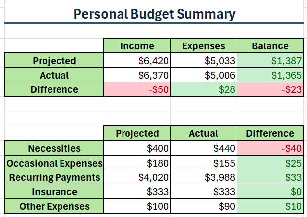

Projects
Filters
Telecom Customer Churn
SQL, PowerBI, Figma
Churn analysis for a fictional California telecom company to determine how many customers are leaving the company, what kind of customers are leaving, and why
Telecom Customer Churn
Tools: PostgreSQL, Power BI, Figma
Datasets:
- telecom_customer_churn.csv (38 fields, 7043 observations)
- telecom_zipcode_population.csv (2 fields, 1671 observations)
Datasets sourced from Maven Analytics
Telecom Customer Churn Variables:
- CustomerID
- Gender
- Age
- Married
- Number of dependents
- City
- Zipcode
- Latitude
- Longitude
- Number of referrals
- Tenure in months
- Offer (A, B, C, D, E, None)
- Phone service
- Avg monthly long distance charges
- Multiple lines
- Internet service
- Internet type (DSL,Fiber Optic, Cable)
- Avg monthly GB download
- Online security
- Online backup
- Device protection plan
- Premium tech support
- Streaming TV
- Streaming movies
- Streaming music
- Unlimited data
- Contract (Month-to-Month, One Year, Two Years)
- Paperless billing
- Payment method (Bank Withdrawal, Credit Card, Mailed Check)
- Monthly charge
- Total charges
- Total refunds
- Total extra data charges
- Total long distance charges
- Total revenue
- Customer status (Churned, Stayed, Joined)
- Churn category (Attitude, Competitor, Dissatisfaction, Other, Price)
- Churn reason (directly related to churn category)
Zipcode Population Variables
- Zipcode
- Population
Data Preparation
Table Creation
-- create zipcode population table --
CREATE TABLE zipcodes (
zipcode INT,
population INT
);
\copy zipcodes FROM 'filepath/telecom_zipcode_population.csv' DELIMITER ',' CSV HEADER
-- create types for customer variables --
CREATE TYPE genders as ENUM('Male', 'Female');
CREATE TYPE yes_no AS ENUM('Yes', 'No');
CREATE TYPE offers AS ENUM('None', 'Offer A', 'Offer B', 'Offer C', 'Offer D', 'Offer E');
CREATE TYPE internet_types AS ENUM('DSL', 'Fiber Optic', 'Cable');
CREATE TYPE contracts AS ENUM('Month-to-Month', 'One Year', 'Two Year');
CREATE TYPE payments AS ENUM('Bank Withdrawal', 'Credit Card', 'Mailed Check');
CREATE TYPE customer_statuses AS ENUM('Churned', 'Stayed', 'Joined');
CREATE TYPE churn_categories AS ENUM('Attitude', 'Competitor', 'Dissatisfaction', 'Other', 'Price');
-- create customer churn table --
CREATE TABLE customers (
customer_id VARCHAR(15) UNIQUE,
gender genders,
age SMALLINT,
married yes_no,
number_of_dependents SMALLINT,
city VARCHAR(75),
zipcode INT,
latitude DOUBLE PRECISION,
longitude DOUBLE PRECISION,
number_of_referrals SMALLINT,
tenure_in_months SMALLINT,
offer offers,
phone_service yes_no,
avg_monthly_long_distance_charges FLOAT,
multiple_lines yes_no,
internet_service yes_no,
internet_type internet_types,
avg_monthly_gb_download SMALLINT,
online_security yes_no,
online_backup yes_no,
device_protection_plan yes_no,
premium_tech_support yes_no,
streaming_tv yes_no,
streaming_movies yes_no,
streaming_music yes_no,
unlimited_data yes_no,
contract contracts,
paperless_billing yes_no,
payment_method payments,
monthly_charge FLOAT,
total_charges FLOAT,
total_refunds FLOAT,
total_extra_data_charges SMALLINT,
total_long_distance_charges FLOAT,
total_revenue FLOAT,
customer_status customer_statuses,
churn_category churn_categories,
churn_reason VARCHAR(250)
);
\copy customers (customer_id, gender, age, married, number_of_dependents, city, zipcode, latitude, longitude, number_of_referrals, tenure_in_months, offer, phone_service, avg_monthly_long_distance_charges, multiple_lines, internet_service, internet_type, avg_monthly_gb_download, online_security, online_backup, device_protection_plan, premium_tech_support, streaming_tv, streaming_movies, streaming_music, unlimited_data, contract, paperless_billing, payment_method, monthly_charge, total_charges, total_refunds, total_extra_data_charges, total_long_distance_charges, total_revenue, customer_status, churn_category, churn_reason) FROM 'filepath/telecom_customer_churn.csv' DELIMITER ',' CSV HEADER
Data Cleaning
The main concern for data cleaning for this churn analysis are duplicate customer IDs and missing zipcodes in the customer tables that would interfere with joins.
SELECT customer_id
FROM customers
GROUP BY customer_id
HAVING COUNT(customer_id) > 1;
SELECT COUNT(DISTINCT customer_id) AS total_customers
FROM customers;
There are 0 customer ID duplicates in the customers table and 7043 unique customer IDs.
SELECT COUNT(DISTINCT customer_id) AS null_zip_count
FROM customers
WHERE zipcode IS NULL;
There are zero null values for zipcode in the customers table, which is ideal for joining with the population table.
There are no significant issues with the data that was given.
Exploratory Data Analysis
Populations by Zip Code
-- population summary statistics --
SELECT ROUND(AVG(population), 1) AS avg_pop,
MIN(population) AS min_pop,
PERCENTILE_CONT(0.25) WITHIN GROUP (ORDER BY population) AS pop_q1,
PERCENTILE_CONT(0.50) WITHIN GROUP (ORDER BY population) AS pop_q2,
PERCENTILE_CONT(0.75) WITHIN GROUP (ORDER BY population) AS pop_q3,
MAX(population) AS max_pop
FROM zipcodes;
California has an average population of 20276.4 people, by zip code. The median population is 14239, and the first and third quartiles are 1789 and 32942.5 respectively. The smallest population by zip code is 11 people and the largest is 105285 people.
Customer Demographics
-- age summary stats --
SELECT ROUND(AVG(age), 1) AS avg_age, MIN(age) AS min_age, MAX(age) AS max_age
FROM customers;
-- gender --
SELECT gender,
COUNT(customer_id) AS customers_count,
ROUND(100*COUNT(customer_id)/7034) AS percentage
FROM customers
GROUP BY gender;
-- married or unmarried --
SELECT married,
COUNT(customer_id) AS customers_count,
ROUND(100*COUNT(customer_id)/7034) AS percentage
FROM customers
GROUP BY married;
-- number of dependents --
SELECT number_of_dependents,
COUNT(customer_id) AS customers_count,
ROUND(100*COUNT(customer_id)/7034) AS percentage
FROM customers
GROUP BY 1
ORDER BY 1;
The average age of customers is 46.5 with a range of 19 to 80. The ratio of men to women is roughly 1:1. 48% of customers are married. 76% percent of customers have no dependents. 7% of customers have one dependent, 7% have two, and 7% have three. There are a handful of customers for each number of dependents up to nine dependents.
Services and Contracts
-- contract types --
SELECT contract,
COUNT(customer_id) AS customer_count,
ROUND(100*COUNT(customer_id)/7043) AS percentage
FROM customers
GROUP BY contract
ORDER BY 2 DESC;
-- offers --
SELECT offer,
COUNT(customer_id) AS customer_count,
ROUND(100*COUNT(customer_id)/7043) AS percentage
FROM customers
GROUP BY offer
ORDER BY 2 DESC;
Half of customers are contracted on a month-to-month basis. 26% have a two year contract and 22% have a one year contract (the rest of the customers were missing a value for the contract variable).
55% of customers have no offer. The most common offers are offer B and offer E, with 11% of customers for each. Offer D has 8%, offer A has 7%, and Offer C is the least common with only 5%.
-- phone --
SELECT ROUND(100*COUNT(customer_id)/7034) AS phone_service_percentage
FROM customers
WHERE phone_service = 'Yes';
-- internet --
SELECT ROUND(100*COUNT(customer_id)/7034) AS internet_service_percentage
FROM customers
WHERE internet_service = 'Yes';
-- premium tech support --
SELECT ROUND(100*COUNT(customer_id)/7034) AS tech_support_percentage
FROM customers
WHERE premium_tech_support = 'Yes';
-- online security --
SELECT ROUND(100*COUNT(customer_id)/7034) AS online_security_percentage
FROM customers
WHERE online_security = 'Yes';
-- online backup --
SELECT ROUND(100*COUNT(customer_id)/7034) AS online_backup_percentage
FROM customers
WHERE online_backup = 'Yes';
-- streaming --
SELECT 100 - ROUND(100*COUNT(customer_id)/7034) AS streaming_percentage
FROM customers
WHERE streaming_tv = 'No'
AND streaming_movies = 'No'
AND streaming_music = 'No';
The most common service is phone service, with 90% of all customers subscribed. The next most popular services are internet and some form of streaming with 78% and 73% respectively. Online security, online backup, and tech support were much less popular, ranging from 28% to 34% of customers.
Churn Rate and Lost Revenue
Customer Status and Total Revenue
-- customer status --
SELECT customer_status,
COUNT(customer_id) AS customers_count,
ROUND(100*COUNT(customer_id)/7043) AS percentage
FROM customers
GROUP BY customer_status;
-- total revenue --
SELECT ROUND(SUM(total_revenue)) AS total_revenue
FROM customers;
-- total revenue by customer status --
SELECT customer_status,
SUM(total_revenue) AS revenue,
ROUND(100* SUM(total_revenue)/21371132) AS percentage
FROM customers
GROUP BY customer_status;
1869 total customers were churned, accounting for 26% of customers. 67% of customers stayed, and 6% were new customers.
Out of the $21,371,132 in total revenue, $3,684,459.82 (17%) of revenue was from churned customers. 83% of the revenue was from customers that stayed. Customers that just joined unsurprisingly did not contribute much to the total revenue, only $54,279.75.
Churn Categories and Reasons
-- churn category --
SELECT churn_category,
COUNT(customer_id) AS customer_count,
ROUND(100*COUNT(customer_id)/1869) AS percentage
FROM customers
WHERE customer_status = 'Churned'
GROUP BY 1
ORDER BY 2 DESC;
-- most common churn reasons --
SELECT churn_category, churn_reason,
COUNT(customer_id) AS customer_count
FROM customers
WHERE customer_status = 'Churned' AND churn_reason IS NOT NULL
GROUP BY 1, 2
ORDER BY customer_count DESC
LIMIT 5;
44% of customers were churned because of a competitor, the most common category. Another 17% were lost because of dissatisfaction, 16% because of attitude, 11% because of price, and 9% because of a different reason.
The five most common specific reasons for leaving were:
- The competitor had a better devices
- The competitor had a better offer
- The attitude of a support person
- Other/don't know
- Competitor offered more data
How many of the churned customers were high-value customers?
-- calculate revenue quartiles --
SELECT PERCENTILE_CONT(0.25) WITHIN GROUP (ORDER BY total_revenue) AS rev_q1,
PERCENTILE_CONT(0.50) WITHIN GROUP (ORDER BY total_revenue) AS rev_q2,
PERCENTILE_CONT(0.75) WITHIN GROUP (ORDER BY total_revenue) AS rev_q3
FROM customers;
-- group churned customers by revenue quartile --
SELECT CASE
WHEN total_revenue < 605.61 THEN 'q1'
WHEN total_revenue < 2108.64 THEN 'q2'
WHEN total_revenue < 4801.145 THEN 'q3'
ELSE 'q4'
END AS rev_quartile,
COUNT(customer_id) AS customer_count,
ROUND(100*COUNT(customer_id)/1869) AS percentage
FROM customers
WHERE customer_status = 'Churned'
GROUP BY 1
ORDER BY 1;
Over a third of churned customers were in the lowest total revenue quartile and a fourth were in the second lowest quartile. This may mean that churned customers were not very profitable customers, or the lower total revenue could be due to a difference in typical tenure for churned and non-churned customers.
-- tenure summary stats for churned customers --
SELECT ROUND(AVG(tenure_in_months)) AS avg_tenure,
PERCENTILE_CONT(0.25) WITHIN GROUP (ORDER BY tenure_in_months) AS q1,
PERCENTILE_CONT(0.5) WITHIN GROUP (ORDER BY tenure_in_months) AS median,
PERCENTILE_CONT(0.75) WITHIN GROUP (ORDER BY tenure_in_months) AS q3
FROM customers
WHERE customer_status = 'Churned';
-- tenure summary stats for non-churned customers --
SELECT ROUND(AVG(tenure_in_months)) AS avg_tenure,
PERCENTILE_CONT(0.25) WITHIN GROUP (ORDER BY tenure_in_months) AS q1,
PERCENTILE_CONT(0.5) WITHIN GROUP (ORDER BY tenure_in_months) AS median,
PERCENTILE_CONT(0.75) WITHIN GROUP (ORDER BY tenure_in_months) AS q3
FROM customers
WHERE customer_status = 'Stayed';
Churned customers have an average tenure of 18 months and a median of 10 months, compared to the 38 month average and median of remaining customers. The middle 50% of churned customers had a tenure between 2 and 29 months, while the middle 50% of remaining customers have a tenure between 15 and 61 months. Churned customers generally have much shorter tenures, which could be a factor in the lower total revenues.
High and low-value customers should be determined by monthly charges instead so the difference in tenure between groups will not skew the results.
-- calculate monthly charges quartiles --
SELECT PERCENTILE_CONT(0.25) WITHIN GROUP (ORDER BY monthly_charge) AS chrg_q1,
PERCENTILE_CONT(0.50) WITHIN GROUP (ORDER BY monthly_charge) AS chrg_q2,
PERCENTILE_CONT(0.75) WITHIN GROUP (ORDER BY monthly_charge) AS chrg_q3
FROM customers;
-- group churned customers by monthly charges quartile --
SELECT CASE
WHEN monthly_charge < 30.4 THEN 'q1'
WHEN monthly_charge < 70.05 THEN 'q2'
WHEN monthly_charge < 89.75 THEN 'q3'
ELSE 'q4'
END AS chrg_quartile,
COUNT(customer_id) AS customer_count,
ROUND(100*COUNT(customer_id)/1869) AS percentage
FROM customers
WHERE customer_status = 'Churned'
GROUP BY 1
ORDER BY 1;
66% of churned customers were in the top half of monthly charges, and only 10% were in the bottom quartile. Churned customers appear to generally be high-value customers based on monthly earnings, meaning that the company is losing out on a lot of future earnings by not retaining these customers.
Ideal Churn Profile
Churned Customer Demographics
-- cities with the most churned customers --
SELECT city, COUNT(customer_id) AS customer_count
FROM customers
WHERE customer_status = 'Churned'
GROUP BY 1
ORDER BY 2 DESC
LIMIT 5;
-- number of churned customers in cities grouped by population quartile --
SELECT CASE
WHEN population < 1789 THEN 'q1'
WHEN population < 14239 THEN 'q2'
WHEN population < 32942.5 THEN 'q3'
ELSE 'q4'
END AS pop_quartile,
COUNT(customer_id) AS customer_count
FROM customers AS c
INNER JOIN zipcodes AS z
ON c.zipcode = z.zipcode
WHERE customer_status = 'Churned'
GROUP BY 1
ORDER BY 1;
The five cities with the most churned customers were:
- San Diego - 185 customers
- Los Angeles - 78 customers
- San Francisco - 31 customers
- San Jose - 29 customers
- Sacramento - 26 customers
These are all more populous cities in California. Using the population quartiles calculated in the exploratory data analysis step, it is clear that bigger cities unsurprisingly have more churned customers. The lowest quartile had 380 churned customer, the second lowest had 406, the second highest had 459, and the highest had 624. Given this relationship between city size and churn, it is not clear if city has an unusual impact on customer churn rate.
-- age group --
SELECT CASE
WHEN age < 20 THEN '19 and under'
WHEN age < 30 THEN '20s'
WHEN age < 40 THEN '30s'
WHEN age < 50 THEN '40s'
WHEN age < 60 THEN '50s'
WHEN age < 70 THEN '60s'
WHEN age < 80 THEN '70s'
ELSE '80 and up'
END AS age_group,
COUNT(customer_id) AS customer_count,
ROUND(100*COUNT(customer_id)/1869) AS percentage
FROM customers
WHERE customer_status = 'Churned'
GROUP BY 1
ORDER BY 1;
-- gender --
SELECT gender,
COUNT(customer_id) AS customer_count,
ROUND(100*COUNT(customer_id)/1869) AS percentage
FROM customers
WHERE customer_status = 'Churned'
GROUP BY 1;
-- married or unmarried --
SELECT married,
COUNT(customer_id) AS customer_count,
ROUND(100*COUNT(customer_id)/1869) AS percentage
FROM customers
WHERE customer_status = 'Churned'
GROUP BY 1;
-- number of dependents --
SELECT number_of_dependents,
COUNT(customer_id) AS customer_count,
ROUND(100*COUNT(customer_id)/1869) AS percentage
FROM customers
WHERE customer_status = 'Churned'
GROUP BY 1
ORDER BY 1;]
For the age ranges, there are very few churned customers under 20 years old or above 80 years old. The other decades are fairly consistent (around 16%) with a slight peak for the 40s with 17%.
Gender does not seem to be much of a factor for churn rate. 939 churned customers were women and 930 were men.
Marriage status and number of dependents are where the churned customers start to stand out from the demographics of customers as a whole. 35% of churned customers were married compared to 48% of all customers. 94% of churned customers had no dependents, 1% had one dependent, 1% had two, and 1% had three compared to 76%, 7%, 7%, and 7% for customers in general.
Churned Customer Services and Contracts
-- contract type --
SELECT contract,
COUNT(customer_id) AS customer_count,
ROUND(100*COUNT(customer_id)/1869) AS percentage
FROM customers
WHERE customer_status = 'Churned'
GROUP BY 1
ORDER BY 2 DESC;
-- offer --
SELECT offer,
COUNT(customer_id) AS customer_count,
ROUND(100*COUNT(customer_id)/1869) AS percentage
FROM customers
WHERE customer_status = 'Churned'
GROUP BY 1
ORDER BY 2 DESC;
Churned customers generally had shorter contracts than other customers. The majority of churn customers had a month-to month contract (88%). 8% had a one year contract and only 2% had a two year contract.
56% percent of churned customers had no offers, which is close to the percent of all customers that do not have an offer. Offer E was twice as common for churned customers than all customers, with 22% of churned customers having that offer. Offer B was only half as common with only 5%. 8% of churned customers had offer D, 5% had offer C, and only 1% had offer A.
-- internet service --
SELECT internet_service,
COUNT(customer_id) AS customer_count,
ROUND(100*COUNT(customer_id)/1869) AS percentage
FROM customers
WHERE customer_status = 'Churned'
GROUP BY 1
ORDER BY 2 DESC;
-- tech support --
SELECT premium_tech_support,
COUNT(customer_id) AS customer_count,
ROUND(100*COUNT(customer_id)/1869) AS percentage
FROM customers
WHERE customer_status = 'Churned'
GROUP BY 1
ORDER BY 1;
-- online security --
SELECT online_security,
COUNT(customer_id) AS customer_count,
ROUND(100*COUNT(customer_id)/1869) AS percentage
FROM customers
WHERE customer_status = 'Churned'
GROUP BY 1
ORDER BY 1;
-- online backup --
SELECT online_backup,
COUNT(customer_id) AS customer_count,
ROUND(100*COUNT(customer_id)/1869) AS percentage
FROM customers
WHERE customer_status = 'Churned'
GROUP BY 1
ORDER BY 1;
Churned customers are more likely to have internet service than customers in general, with 93% subscribed compared to only 78%. However, churned customers were only half as likely to pay for either premium tech support or online security.
Jean Smith - The Ideal Churn Profile

Personal Finance Tracker
Excel
A personal finance management tool that allows people to track monthly income and expenses in detail and analyzes financial trends over time
Personal Finance Tracker
Tools: Excel
Define the Problem
The Problem:
People need a way to track their income and expenses in order to make good financial decisions.
The Solution:
A personal finance tracker that features:
- A way to log income and expenses by category for each month
- Comparisons between expected and actual income/expenses
- An analysis of how finances change over time
- Trends represented with easy to understand visualizations
Monthly Budget Template
Categories
A good budget template should make distinctions between different sources of income and types of expenses to better track spending habits. A Categories sheet was created to split finances into categories and subcategories.
The main categories were:
- Income (salary, interest, etc.)
- Necessities (groceries, transportation, etc.)
- Occasional Expenses (restaurants, hobbies, etc.)
- Recurring Payments (rent, utilities, etc.)
- Insurance
- Other Expenses
Personal Budget Overview
Each category has its own table that tracks the predicted amount, actual amount, and the difference between those two amounts for each subcategory. The tables also have a row that calculates the subtotal of each measure for that particular category. The difference column is automatically calculated, and its subtotal is highlighted green or red based on whether that category was on target or not for that month.
Personal Budget Summary
The personal budget summary was designed to make it easy to track the money coming in and being spent for that month and give a breakdown of spending by category. The summary also calculates the difference between the project totals and actual totals to suggest which categories need to be adjusted in the budget. Important values like balance and the difference between expected and actual totals are colored green or red to give a good idea of the finances for the month without needing to carefully read each value.
The first table of the personal budget summary compares the predicted and actual total income, total expenses, and balance, as well as the difference between the predicted and actual totals of each. Cells in the difference row and balance column will appear green if the amount is at least $0 and red if the amount is in the negatives.
The second table of the personal budget summary compares the predicted and actual totals for each category of expenses, as well as the difference between predicted and actual. Cells in the difference column are red if in the negatives, and green if the amount is at least $0.
Finance Trends
Monthly Summaries

Each monthly budget has a row near the bottom that represents the monthly summary. The monthly summary can be copy and pasted into the Summaries sheet to be analyzed in the Finance Trends sheet.
Finances by Month
The finances by month table tracks the actual income, expenses, and balance of each month. There is also a column that shows how the running balance changes with time to track how much money has been saved or lost over a long period of time.
Visualizations
The first visualization is a stacked line graph that compares the total income and total expenses from month-to-month.
The second visualization is a line graph of the running balance over the months. The visualization also includes a trend line that forecasts the expected running total for the next two months.

NYC Trees and Income by Neighborhood
Tableau
A visual look at the relationship between income and the number and quality of trees in New York boroughs
NYC Trees and Income by Neighborhood
Tools: Tableau
Define the Problem
How do the number of trees and quality of trees vary by borough in NYC, and does income appear to be related?
Datasets:
- tree-census-NYC_2015.csv
- 16 fields
- 683788 observations
- income-NYC_2015.csv
- 8 fields
- 218 observations
Variables
Tree Census Dataset
Quantitative
- Tree Dbh (height of tree, in feet)
- Stump Diam (tree diameter, indicates age, in inches)
- Latitude (decimal representation)
- Longitude (decimal representation)
Qualitative
- Tree Id (six-digit number)
- Status ('Alive', 'Stump', 'Dead')
- Health ('Good', 'Fair', 'Poor')
- Spc Latin (scientific name of tree species)
- Spc Common (common name of tree species)
- Address
- Zipcode
- Borocode (1-5 corresponding to 'Manhattan', 'Bronx', 'Brooklyn', 'Queens', 'Staten Island')
- Borough (name of borough)
- Nta Name (name of neighborhood)
- State
Note: F1 column is the table's primary key and was not analyzed along with the other variables
Income Dataset
Quantitative
- Total Income ($)
- Total Income MOE (margin of error, in $)
- Median Income ($)
- Median Income MOE (margin of error, in $)
- Mean Income ($)
- Mean Income MOE (margin of error, in $)
Qualitative
- Geographical Id (8600000US + zip code)
- Zipcode
Missing Data
A large number of observations have a stump diameter of 0 inches, regardless of health or status. This suggests that the data is missing, so these observations will be eliminated for any analysis related to tree stump diameter to avoid skewing results.
There were also several null values in the health column, which should be removed for analysis for the same reason as the stump diameter column.
Visualize Data Relationships
Income by Location

We can compare the income of each borough by side-by-side box plots.
- Manhattan has the highest average income as well as the highest incomes in general.
- The Bronx has the lowest average income and has some of the lowest incomes along with Brooklyn.
- Manhattan has the greatest spread of income, while Staten Island has a narrow range and has middle 50% of its observations within a $20k range

Mapping the average income of each zip code supports these observations and lets us see how much income in each borough varies by neighborhood.
Trees by Location
Number of Trees

Based on this bar chart, Queens has the most trees and Brooklyn has the second highest number of trees. Manhattan has the least number of trees, only a fifth of the number Queens has. The Bronx and Staten Island both have more trees than Manhattan, but not nearly as many as Brooklyn.
Mapping the trees by zip code generally supports these findings, and also reveals that Staten Island has two areas with a large amount of trees and not many trees anywhere else.
Health of Trees

Based on the bar charts above, we can make some observations:
- The majority of trees are alive and in good health in every borough
- The proportion of live to dead trees is fairly consistent by borough, with the exception of Staten Island having a smaller percentage of dead trees and Queens having a slightly higher percentage of dead trees
- Staten Island and the Bronx have very few trees in poor health
Tree age is measured by counting the rings on the stump, so tree stump diameter can be used to compare the age of trees. Older trees would indicate healthier conditions for the trees over a long period of time.
- Queens and Brooklyn have the largest tree stumps on average, indicating that the trees there are generally older
- Staten Island and the Bronx have the next largest tree stumps
- Manhattan has the smallest tree stumps, therefore the youngest trees
Trees and Income

Creating a scatter plot of average income of a borough compared to the number of trees reveals a negative relationship. Plotting the line of the linear regression we can see that as income increases the number of trees decreases, however, we can also see that this line only fits three of the boroughs well and that Queens and the Bronx do not fit this model.
Outliers
The income box plot reveals outliers on the higher end for Brooklyn, Queens and Manhattan.
There is one observation in Manhattan with a value of $400K, which is $100K more than the next highest income.
Findings and Insights
There are tangible difference in the number of trees, and the health of trees to a lesser extent, between the different NYC boroughs. There are also significant differences in average income and range of income for these boroughs.
However, these differences in income do not seem to the related to the difference in trees. The borough most trees and the borough with the healthiest trees were in the mid-range of incomes and the borough with the fewest trees was the one with the highest income. Plotting income and number of trees did not show any relationship, which was confirmed by the linear regression model only fitting three of the five boroughs.
Future Studies
Further studies should examine factors besides income that may be related to the number and health of trees in NYC. Population and area of the boroughs were not included in the datasets and could influence the number of trees more than income.

Childhood Vegetarianism and Height
Rstudio
A statistical examination of the impact of childhood vegetarianism on growth outcomes
Childhood Vegetarianism and Height
Group final data analysis project completed for STAT 212: Applied Statistics
Tools: Rstudio
Define the Problem
Is there is a relationship between being vegetarian and a student's height?
Dataset
dap_data.csv, randomly selected subset from the Census at Schools dataset
62 fields, 250 observations
Restrictions
- Gender was limited to female students to avoid differences in the average height or the level of vegetarianism between male and female students affecting the findings.
- Age was limited to between 11 and 14 inclusive. High school vegetarians could have become vegetarian after they were done growing so their vegetarianism would have no impact on height. Grades 6-8 are also when many students experience growth spurts so the difference in height between the two groups would be more pronounced if vegetarianism is related to height.
Variables
Note: There are 62 fields in the dataset but only 2 relevant fields for this study
- Vegetarian ('Yes', 'No'): categorical and nominal
- Height_cm: quantitative and continuous
Missing Data
There are 4 observations missing a value for the vegetarian category.
These observations were kept for univariate summaries of the height variable and eliminated for all other statistical analysis.
Univariate Summaries
- Vegetarian
- Yes: 16 observations (6.50%)
- No: 230 observations (93.50%)
- Height (cm)
- Mean: 156.23
- Standard Deviation: 10.82
- Median: 158
- Minimum: 96
- Maximum: 189
- IQR: 13
- 1st Quartile: 150
- 3rd Quartile: 163

# number of vegetarian and non-vegetarian students
table(data$Vegetarian)
# sample height distribution
sd(data$Height_cm)
range(data$Height_cm)
summary(data$Height_cm)
hist(data$Height_cm,
xlab='Height (cm)', ylab='Number of students',
main='Histogram of Students\' Height')
abline(v=mean(data$Height_cm), col='red')
Outliers
- Outliers are any observation with a height below 140.5cm or over 182.5
- There were outliers for height at 96, 122, 124, 124, 127, 133, 135, 136, 137, 138, 140, 140, 140, 140, 140, 140, and 189
- The 6 observations with a height of 140 cm are just over the limit to qualify as an outlier using the interquartile range.
- All outliers were non-vegetarian students.
- With the exception of one 13 year old and three 14 year olds, all of the lower outliers were 11 or 12 years old. This may explain why these particular students were outliers, considering they were on the lower end of the included age range for the dataset.
Bivariate Summaries
- Mean height of vegetarian students: 156cm
- Mean height of non-vegetarian students: 158cm
- Non-vegetarian students had a much wider range for height and more outliers than vegetarian students

# height distribution for two groups
boxplot(data$Height_cm ~ data$Vegetarian, main = "Height of Vegetarian and Non-Vegetarian Female Students Ages 11-14",
xlab=NULL, ylab = "Height (cm)", names= c("Non-Vegetarian", "Vegetarian"))
Inference Tests
A two-sample mean test was performed with a significance level of 0.05.
# inference test
# calculate sample statistics
n<- tapply(data$Height_cm, data$Vegetarian, FUN=length)
n.non<-as.numeric(gsub("No","", n[1]))
n.veg<-as.numeric(gsub("Yes","", n[2]))
means<- tapply(data$Height_cm, data$Vegetarian, FUN=mean)
xbar.non<-as.numeric(gsub("No","", means[1]))
xbar.veg<-as.numeric(gsub("Yes","", means[2]))
sd<- tapply(data$Height_cm, data$Vegetarian, FUN=sd)
sd.non<-as.numeric(gsub("No","", sd[1]))
sd.veg<-as.numeric(gsub("Yes","", sd[2]))
# calculate test statistic
se <- sqrt(sd.non^2/n.non + sd.veg^2/n.veg) # standard error
se
t.star <- ((xbar.veg-xbar.non)-0)/se
t.star
# calculate p value
min(n.non-1, n.veg-1) # degrees of freedom
pval <- 2*pt(-abs(t.star), df = min(n.non-1, n.veg-1))
pval
The test statistic was 0.71 for a difference in means of 2 and a standard error of 2.4803. The resulting p value with 15 degrees of freedom was 0.4890, which was less than the significance level.
We must fail to reject the null hypothesis. There is insufficient evidence to conclude that vegetarian students have a different average height than non-vegetarian students, at least for female students between the ages of 11 and 14.
The 95% confidence interval for the two-sample mean was suggests that the true difference between vegetarian and non-vegetarian students in our chosen demographic is between -3.5273cm and 7.0458cm.
# confidence interval
pe <- xbar.veg - xbar.non
crit.val <- qt(1-0.05/2, df = min(n.non-1, n.veg-1))
se <- sqrt(sd.non^2/n.non + sd.veg^2/n.veg)
margin <- crit.val * se
pe - margin # low end
pe + margin # high end
Findings and Insights
The average height of vegetarian students sampled was 156cm compared to an average height of 158cm for non-vegetarians. However, our inference tests indicate that there is not enough evidence to conclude that this difference holds for the population as a whole.
The confidence interval containing both positive and negative values indicates that the average height of middle school female vegetarians could be either shorter, taller, or the same as their non-vegetarian classmates.
In conclusion, the data does not indicate that a vegetarian diet has an impact on a child's growth, at least for female children between the ages of 11 and 14.
Future Studies
There are two obvious shortcomings to this study. Firstly, there were significantly fewer vegetarian students than non-vegetarian students in our dataset. Secondly, our study did not look at how long each student had been a vegetarian. A student that has been vegetarian for a decade is more likely to have their height affected by the diet than a student that has only been a vegetarian for a year. Further studies could take into account how long the student has been vegetarian and used a matched pair system to avoid these shortcomings.